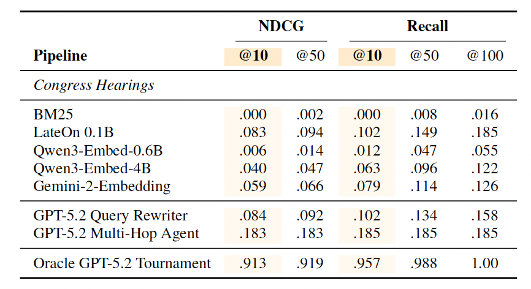

Paper Notes: OBLIQ-Bench
last updated 2026-05-12
The paper turns on the definition of query obliqueness: “the attributes that determine relevance are latent and have little or no surface expression in the document.”
Three types of oblique queries: 1. descriptive queries - “latent property that can be inferred from document content” (imo basically open-domain classification) 2. analogue queries - “all documents that share an archetype with the content of the query” (a hard query-by-example) 3. tip-of-the-tongue queries - “match a fuzzy recollection to a specific passage”
Perhaps this is just my NLP brain, but one of the core ideas seems to be could you treat classification as retrieval. I.e., the example of “find all tweets that express a stance” is, imo, a classification problem. In this light it underscores how difficult the problem is; your retriever has to be able to perform ad hoc classification using only the stored representations and your query representation.
Retrieval-Verification Asymmetry
By far my favorite insight of the paper: find meaningful tasks by selecting those that reasoning models can succeed at (high ceiling), but existing retrieval systems don’t (low floor). A lot of meaningful tasks are like this! And this reflects my experience at Pattern Data quite well.
They formalize it as the difference between the best LLM’s reranking performance on some quality metric (e.g., Recall@10) and the best retrieval model’s performance on the same metric.
Dataset Construction
Like most IR datasets, limited by: how do you get high recall annotations without breaking the bank? Their basic solution is to run an LLM over every doc once to extract some attribute, cluster those attributes, generate queries from those clusters.
Evaluation Results
Super interesting, and worth copying in full at least one table. BM25 scores 0.0, LateOn (SotA open multivector retriever) 0.083, then a big boost from query rewriting agent, though that doesn’t actually hold across tasks.

For a thorough treatment of results, go read the paper! The section of results+takeaways is great!
Follow-Up Questions
- Is it possible to build a training set for oblique queries? At ~1k queries across all 5 tasks, query diversity is probably too limited for training.
- The types of oblique queries represented also certainly isn’t exhaustive, so naturally: how much would training on these types of oblique queries generalize to improved retrieval performance?
- I’d bet you’d see a similar retriever-verifier gap if you just took a bunch of classification datasets and tried to retrieve by label. Bonus points if it’s highly imbalanced so it’s closer to a retrieval setup. How would you solve the “ad hoc” classification with a retriever problem? If you don’t know a priori what the classes are, what do you store? Feels like there’s some push towards query-by-example.